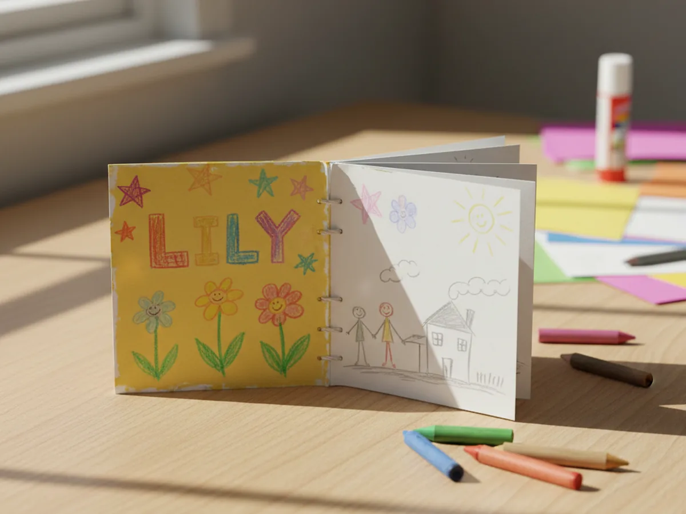
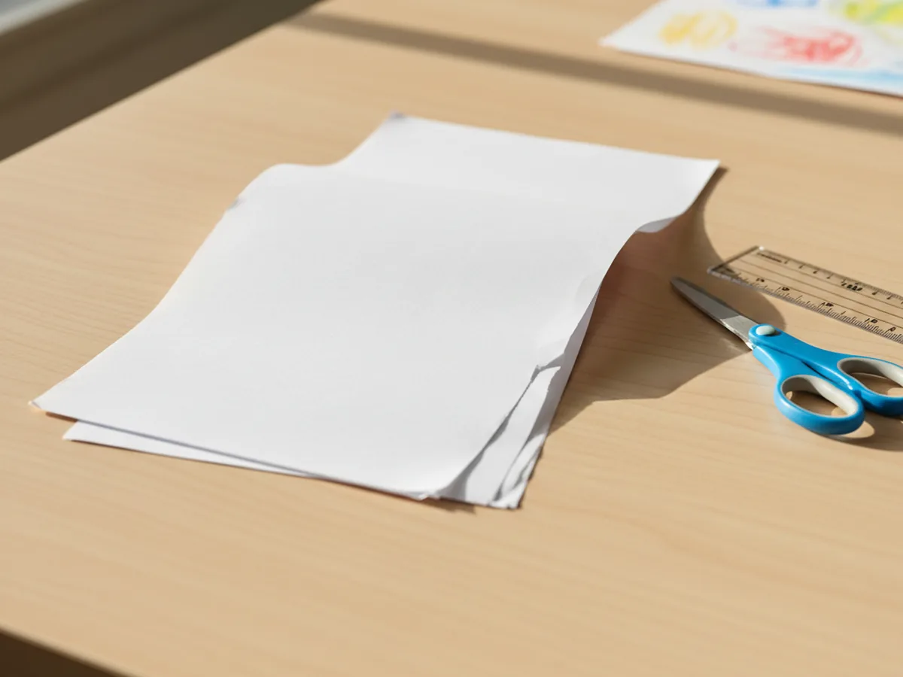
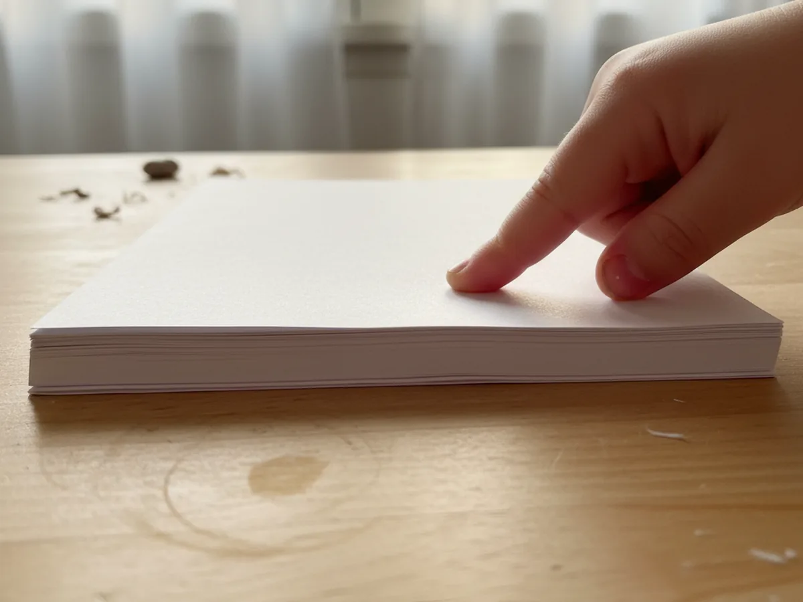
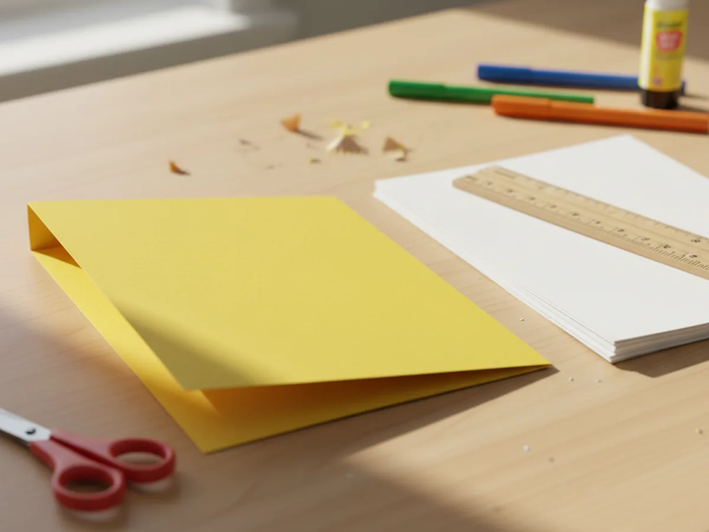
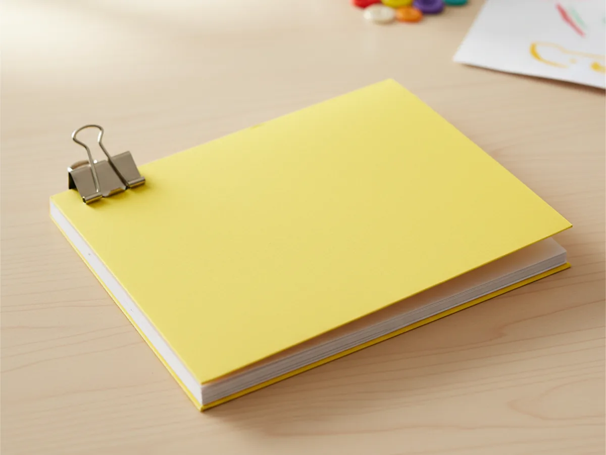
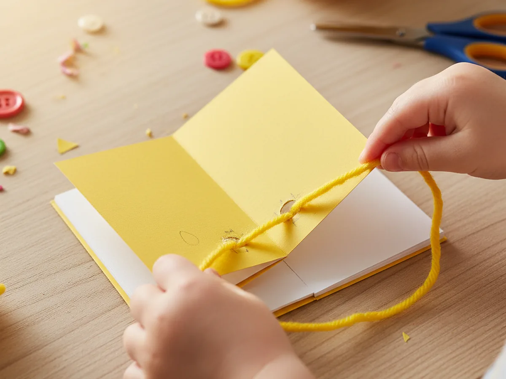
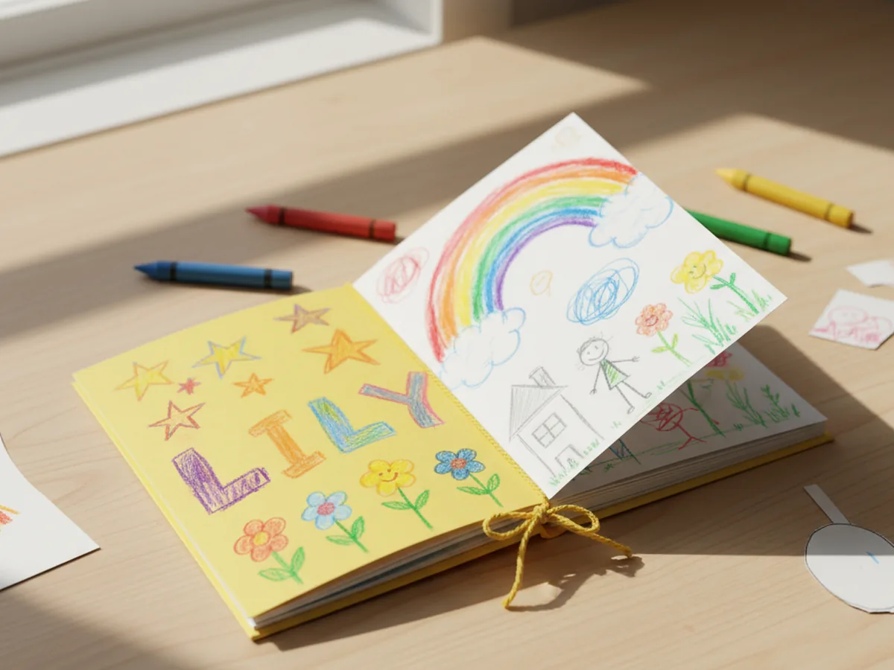

There is something extra special about a book your child made with their own hands. A simple book paper craft gives kids a finished result they can actually use: a tiny blank booklet to fill with drawings, stories, or anything they dream up. 📚 This project needs nothing more than a few sheets of paper, a piece of cardstock, and some yarn, and the whole thing comes together in about 30 minutes. It is calm, creative, and wonderfully low-mess, exactly the kind of afternoon activity that leaves everyone smiling.
What makes this paper book craft so lovely is that it feels real. Not just a coloring page or a cut-out, but a proper little book your child helped build from scratch. Kids are proud of this one, and they have every right to be.
Why Kids Love This Craft
Kids are captivated by the idea of making something they can actually keep and use. Unlike crafts that end up forgotten after a few minutes, a handmade mini book becomes a real object your child can flip through, draw in, and proudly show to grandparents, friends, and anyone else who will look. There is something deeply satisfying about saying "I made this book myself."
The folding, stacking, and threading steps also feel wonderfully satisfying for small hands. Each action has a visible, tangible result: a neat fold, a snug stack of pages, a tied knot along the spine. Children who love order and a sense of completion will find this project especially rewarding. And children who just love making a mess of the cover with crayons? They will enjoy it too. 🎨
From a developmental standpoint, this book paper craft quietly works on fine motor control, hand-eye coordination, and even early literacy skills when your child decides to fill the pages with letters, words, or drawings. It is one of those happy projects where the process is as satisfying as the result.
What You'll Need
Here is everything you need to make a book paper craft at home with your child.
- White printer paper, 3 or 4 standard sheets for the inside pages
- Astrobrights Colored Cardstock, one sheet for the cover in your child's favorite color
- Fiskars Kids Safety Scissors, rounded tips are perfect for ages 3 and up
- Single Hole Punch, for making holes along the spine
- Yarn or ribbon, about 18 inches for threading through the holes and tying a bow
- Crayola Crayons 24 Colors, for decorating the cover and filling in the pages
- Ruler and pencil, optional but helpful for making neat folds
Step-by-Step Instructions
Follow these simple steps and your little one will have a finished mini book ready before snack time.
Step 1: Cut Your Paper to Size
Start by folding three or four sheets of white printer paper in half widthwise, using what kids often call the "hamburger fold." This gives you a stack of small rectangles, each roughly 5.5 by 4.25 inches. These will become the inside pages of your handmade paper booklet. Don't worry about perfectly even edges. A little imperfection only adds to the handmade charm.

Step 2: Fold Each Page Neatly
Take each folded sheet and press the crease firmly with your fingernail or the edge of a ruler. A clean, crisp fold makes the finished book look much neater and feel more satisfying to hold. Once all your sheets are folded, stack them on top of each other so all the open edges line up on the same side. This aligned side will eventually become the open edge of the book, while the folded edge becomes the spine.

Step 3: Make the Cover from Cardstock
Choose a piece of colored cardstock and fold it exactly the same way as the inside pages. Press the fold firmly so it holds its shape well. The cardstock will feel noticeably sturdier than the inside pages, and that sturdiness is exactly what makes it work as a cover. If your cardstock sheet is larger than the folded pages, trim it down so everything matches in size before moving on.

Step 4: Nest the Pages Inside the Cover
Slide your stack of folded pages inside the folded cardstock cover so all the folds line up cleanly along one edge. This aligned folded edge is the spine of your book. Hold everything together firmly and press it flat so nothing slides around. You can add more pages or remove some at this stage if you want a thicker or thinner book.

Step 5: Punch Holes and Bind with Yarn
Use your hole punch to make two or three evenly spaced holes along the spine edge. Start about an inch from the top and bottom, and space the middle hole evenly between them if you are doing three. Cut a length of yarn about three times the height of your book. Thread the yarn through each hole, going from the front to the back, then back to the front. Once all the holes are threaded, tie the yarn ends together in a neat knot or a small bow on the outside. Trim any extra length.

Step 6: Decorate the Cover and Fill In the Pages
Now for the best part. Let your child decorate the cover however they like with crayons, stickers, or their name written in big proud letters. They can draw a picture, give the book a title, or just cover the whole thing in colorful swirls. Then open it up and let them fill the inside pages with drawings, a story, a list of their favorite things, or whatever they feel like. ✏️ The book belongs to them, and they get to decide what goes in it. You might be surprised by what they come up with.

Variations to Try
Mini Thank You Book: Make a smaller version using quarter-sheets of paper and write one kind thing on each page. It becomes a thoughtful, heartfelt gift for a teacher, grandparent, or friend, and your child will love deciding what to write on every page.
Alphabet Learning Book: Write one letter of the alphabet at the top of each page and invite your child to draw something that starts with that letter underneath. A lovely activity for preschoolers who are just beginning to explore reading and sounds.
Family Story Book: Let your child draw a picture on each page and tell you what is happening. Write their words underneath the picture in your best handwriting. You end up with a completely original story told entirely in their voice, which is honestly one of the sweetest keepsakes you can make together. ❤️
Final Thoughts
A book paper craft is one of those projects that keeps on giving long after the making is done. Your child gets a creative activity they feel genuinely proud of, and you both get a sweet little keepsake filled with imagination. The finished mini booklet has a way of sticking around, tucked into a backpack, left on the bedside table, or handed to you with great ceremony to read aloud. Do not be surprised if your child wants to make another one before the first is even finished.
More Crafts You'll Love
If you enjoyed this project, here are two more easy paper crafts perfect for a creative afternoon together.
- Paper Chain Craft for Kids: Easy Step-by-Step Guide
- 20 Adorable Simple Paper Craft Ideas Kids Will Beg to Make Again and Again
Happy crafting!